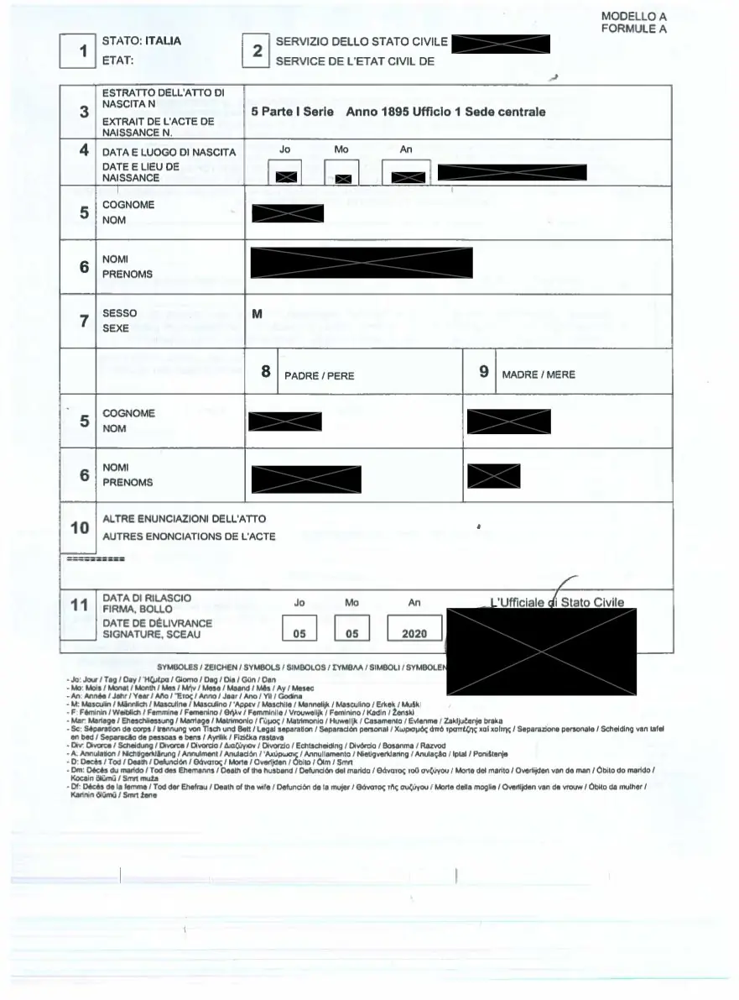

Important 2025 update
Under Law 74/2025 (effective March 28, 2025), Italian citizenship by descent is now limited to applicants with an Italian-born parent or grandparent. The documents required remain largely the same as before — but the generational scope of what you need to collect has narrowed. A €600 government fee per applicant was also introduced by this law.
Why document preparation matters so much
Applying for Italian citizenship through Jure Sanguinis is an intensely document-driven process. It is not enough to simply have the right ancestry — you must prove an unbroken, legally documented chain of Italian citizenship from your ancestor down to yourself. A single missing record, an improperly processed apostille, or a name discrepancy between documents can cause significant delays or rejection.
The specific documents you need depend on your unique lineage, the number of generations involved, the route you're applying through (consulate, municipality, or court), and the specific requirements of the consulate or court handling your case.
Documents always required
Regardless of your specific case, every Jure Sanguinis application requires all of the following:
- Birth, marriage, and death certificates of your Italian ancestor — obtained from the Italian comune (municipality) where they were born. If the original records are unavailable, a certified copy or baptism record may be accepted.
- Birth, marriage, and death certificates for every direct ancestor in your lineage — everyone between your Italian ancestor and you, including parents and grandparents. These must trace the unbroken chain.
- Your own birth certificate — long-form (full) certified copy. An apostille and Italian translation may be required depending on your route.
- Naturalization records — or a Certificate of Non-Existence — for your Italian ancestor. This proves whether and when they became a citizen of another country. If no record exists, USCIS or the relevant agency can issue a formal Certificate of Non-Existence.
- A certified Italian birth record with the municipality's stamp — the original Italian vital records for your ancestor, obtained directly from the comune.
Case-dependent documents
The following documents are required only if they are relevant to someone in your direct lineage. Whether they must be included is ultimately at the discretion of your lawyer, consulate, or comune — but having them ready prevents delays:
- Adoption records — if anyone in your lineage was adopted
- Divorce records — if anyone in your lineage is divorced (to establish name consistency and marital history)
- Military records — if relevant to your ancestor's history or to establish dates
- Document of Non-Existence — an official statement from the government body confirming a specific document does not exist, was lost, or was destroyed
- For 1948 cases: naturalization records for both the female ancestor and her foreign spouse, to establish the citizenship status of both parties at the time of transmission
- U.S. Naturalization Document — if the relevant ancestor did naturalize, the actual naturalization certificate is required to establish the date

Region-dependent documents (consulate applications)
If you are applying through an Italian consulate, requirements vary significantly by jurisdiction. Many consulates require documentation not only for direct ancestors but also for their spouses — which means you may need to provide birth, marriage, and death certificates for people who are not technically in your direct Italian lineage (such as your Italian ancestor's spouse who was not Italian).
It is essential to check the specific requirements of your consulate before assembling your file. Submitting an incomplete file to a consulate typically results in a rejection and a return to the back of the wait queue.
How to process documents for submission
Official Italian documents generally do not require additional processing. All foreign (non-Italian) documents, however, must be properly processed before submission.
Apostille authentication
Documents such as birth, marriage, death, and naturalization certificates must be apostilled — a form of international certification that confirms the document is authentic and valid for use in another country. The apostille is issued by a designated government authority in the document's country of origin (in the U.S., typically the Secretary of State of the issuing state).
Translation into Italian
All foreign documents must be translated into Italian by a certified translator. For court submissions, translations must be sworn and certified — meaning the translator formally attests to the accuracy of the translation in a legal context. For consulate submissions, the requirements may vary.
Certification of translations
Depending on where you are applying, translations may need additional certification by a public notary or by a consulate. Your lawyer or our team will advise on the specific requirements for your case.
Legalization (for non-Hague Convention countries)
If any documents originate from a country that is not a signatory to the Hague Apostille Convention, a more involved legalization process is required — involving both the foreign country's ministry and the Italian consulate. This is uncommon for U.S.-based applicants but may apply if you have documents from certain South American or other countries.